1 Transformações
1.1 Transformações e Suavisações
As vezes os dados precisam ser transformados para a utilização de determinados métodos/modelos;
O objetivo é tornar os modelos mais simples, no caso das ST o objetivo seria melhorar as previsões;
As transformações devem ser feitas exclusivamente para aplicação do modelo, e não como uma técnica de analise dos dados em si.
1.1.1 Alguns exemplos de transfomação dos dados em ST:
Utilização de funções: Logarítmicas, Potências, Exponenciais, ou transformação Box-Cox
Diferenciação: Series não estacionárias, objetivo é transformar a série em estacionária (ex: log), estabilizando a média.
Box-Cox: Estabiliza a variância.
Médias Móveis: Permite a suavização dos dados da ST. Reduz outliers e os efeitos sazonais
Outras técnicas mais avançadas de suavização: Kernel, Loess, Splines e Generalized Additive Model (GAM)
Para mostrar o resultado dessas transformações, iremos mostrar algumas técnicas.
1.1.2 Transformações Box-Cox, Digferenciação e Logarítmica
- Box and Cox (1964) propuseram uma transformação na variável da ST \(Z_t\), que depende do parâmetro \(\lambda\) da seguinte forma:
\[ Z_{t}(\lambda) = \left\{ \begin{array}{rc} Z_t^{\lambda}, &\mbox{se} \quad \lambda \neq 0, \\ ln(Z_t) , &\mbox{se} \quad \lambda = 0. \end{array}\right.\]
Se o valor de \(\lambda\) é igual a zero, a transformação logarítmica da sequência inicial é realizada, no caso em que o valor de lambda difere de zero, a transformação é por lei exponencial. Quando \(\lambda\) é igual a 1, a série é analisada em sua escala original, enquanto o caso \(\lambda = 1/2\) corresponde à transformação transformação da raiz quadrada. Para que a transformação seja aplicável, a série deve ser estritamente positiva.
Ex: Utilizando os dados do dataset Air Passengers, temos:
library(forecast)
par(mfrow=c(3,2))
# Série original
plot(AirPassengers, ylab="Passageiros", main="Original")
# Lambda = 0, Logaritmica
t1 <- BoxCox(AirPassengers,lambda =0 )
plot(t1, ylab="Passageiros", main="Lambda = 0, Logaritmica")
# Lambda = 0.34
t2 <- BoxCox(AirPassengers,lambda =.1 )
plot(t2, ylab="Passageiros", main="Lambda = 0.34")
# Gera labda automático
lbd <- BoxCox.lambda(AirPassengers)
# print(lbd)
t3 <- BoxCox(AirPassengers,lambda =lbd )
plot(t3, ylab="Passageiros", main="Labda Automático")
# Diferenciacao
t4 <- diff(AirPassengers)
plot(t4, ylab="Passageiros", main="Diferenciacao")
# Logaritmo
t5 <- log(AirPassengers)
plot(t5, ylab="Passageiros", main="Log")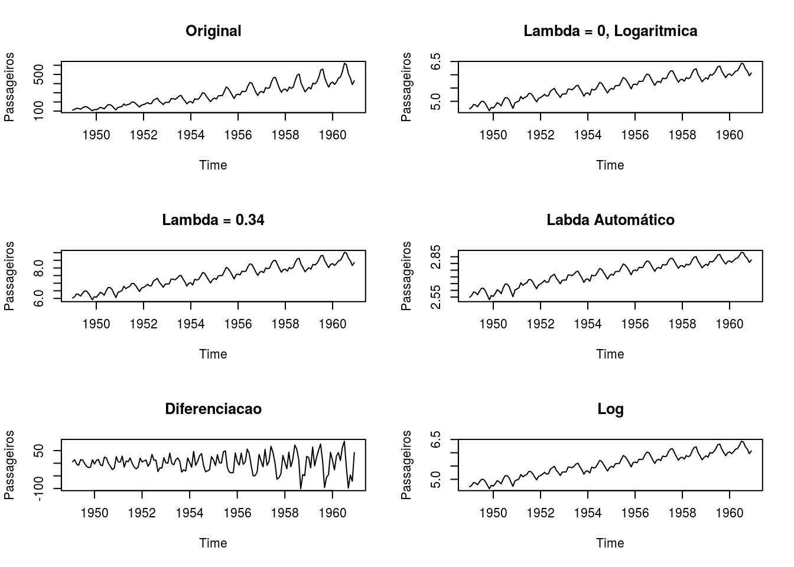
1.2 Métodos de Alisamento ou Suavização
Uma função é suave se contı́nua e derivável em todos os pontos.
Utiliza-se a expressão Funções de Suavização para definir funções que aplicadas sobre um conjunto numérico retornam outro conjunto cujos valores tendem à média, local ou global.
Utiliza-se funções de suavização quando se supõe que o fenômeno é de fato suave, e as observações apresentam variabilidade aleatória pouco relevante.
Também são utilizadas quando se deseja modelar a estrutura geral o fenômeno, desconsiderando cada ocorência isolada.
1.2.1 Algumas funções de suavização
Existem diversas funções de suavização no R dentre as principais destacamos:
Médias móveis: O métodos mais simples de suavização.
Kernel density: Estimativa de densidade de probabilidade – equivale à uma média ponderada.
Loess/Lowess: locally weighted scatterplot smoothing – estende a mesma idéia, mas os valores entram em uma regressao ponderada (não apenas média, ou seja, inclui uma inclinação)
Splines: cúbica, p-splines, thin plate
- Todas essas funções podem ser uni ou multi-dimensionais, existem ainda outras funções para suavizar
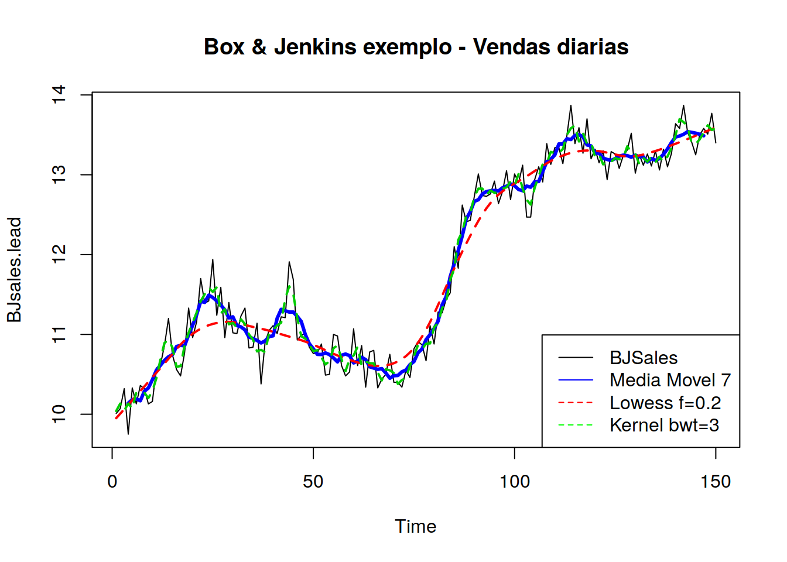
1.2.2 Médias móveis
Considere a ST estacionária e localmente constante, composta de seu nível e mais um ruído aleatório.
\[Z_t = \mu_t + a_t\], \(t = 1,2,...,N\)
Sendo \(E(a_t) = 0\), \(Var(a_t)=\sigma^2_a\) e \(\mu_t\) é um parâmetro desconhecido que varia com o tempo.
A técnica de média móvel consistew em calcular a média aritmética das \(h\) observcações mais recentes, ou seja,
\[M_t = \dfrac{Z_t+Z_{t-1}+...+Z_{t-h+1}}{h}\]
Denotamos por \(h\) sendo o comprimento da média.
Desta forma, \(M_t\) é uma estimativa do nível \(\mu_t\) que não leva em consideração as observações mais antigas. Note que a cada período a observação mais antiga é substituída pela mais recente, calculando-se uma média nova.
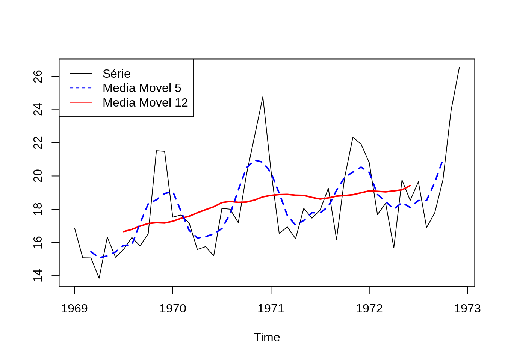
Série original , vamos exemplificar o que acontece com quando se usa uma janela de 3 meses, repare as 3 primeiras observações

Serie com Media Móvel 3 , note que o primeiro é ultimo valores da serie agora são NA

Observe que o valor para fevereiro e calculado a partir dos 3 primeiros valores
(16.87 + 15.08 + 15.07)/3 = 15.67Exemplo: Utilizando a ST mensal referente as mortes em estradas Reino Unido (1969–1984), temos:
library(forecast)
plot(UKDriverDeaths,ylab='')
lines(ma(UKDriverDeaths,12),col=2,lty=1,lwd=2)
lines(ma(UKDriverDeaths,5),col=4,lty=2,lwd=2)
legend("topright",legend=c("Obitos","Media Movel 5","Media Movel 12"),
col = c("black",'blue','red'), lty=c(1,2,1), cex=1)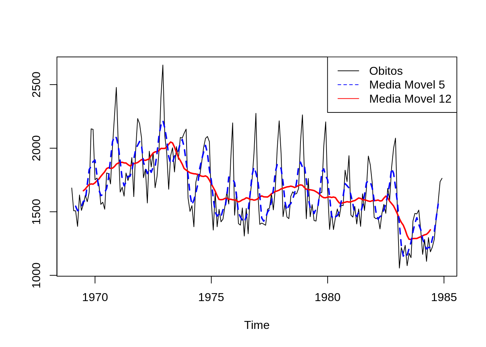
1.2.3 Utilização das Médias Móveis
Processo de Transformação - “Suavização da Série”
Remoção de outliers
Identificação de tendências
Ex: Médias Móveis - ordem 5
1.3 Kernel
O algoritmo:
Seja \((x)\) ponto para o qual se deseja estimar f(.)
Defina a função kernel: simétrica, unimodal, centrada em \((x)\), que cai a zero nos limites da vizinhança.
Esse subconjunto dos dados, também denominado ou ou parâmetro de suavização controla flexibilidade do kernel.
Repita o procedimento para diversos \((x)\) conecte os pontos
\[\hat{f_h}(x) = \dfrac{1}{Nh}\sum{K \left( \dfrac{x-x_i}{h}\right)}\]
\(h\) \(\rightarrow\) largura de banda
\(K\) \(\rightarrow\) função de suavização
Kernel Gaussiano: \[k(x)=\dfrac{1}{\sqrt{2\pi}} exp(1/2 x^2)\]
1.3.1 Diferentes Funções Kernel

Vamos a uma demostração:
ao chamar a função demo() você vai ver um painel de controle como o abaixo

e uma gráfico de uma função kernel como abaixo. ultilise o controle deslisante mostrado pela seta e altere as opções.

- Série Temporal: Leptospirose vs Clima
lepto <- read.csv2("https://gitlab.procc.fiocruz.br/oswaldo/eco2019/raw/master/dados/leptoruido.csv", header=T)
dia <- read.table("https://gitlab.procc.fiocruz.br/oswaldo/eco2019/raw/master/dados/climadia.dat", header=T)
library(lattice)
library(car)
library(sm)
library(survival)
#XY condicionado
xyplot(cases + totrain + tempmed ~ week,
outer=TRUE, layout=c(1, 3), pch=1, type="l",ylab="",
scales=list(x=list(relation='same'), y=list(relation='free')),
data=lepto)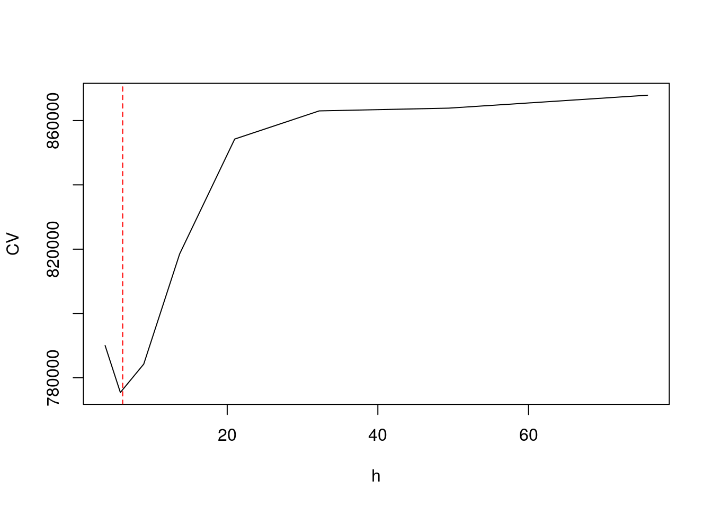
- Exemplos de Kernel
#### density - default "gaussian"
hist(lepto$totrain, breaks=seq(0,400,by=10),freq=F, col="darkgray", main = "Chuva")
lines(density(lepto$totrain , 4),col=2)
lines(density(lepto$totrain , 12),col="blue")
legend("topright", c("4","12"), title="BW", col=c(2,"blue"), lty=c(1,1))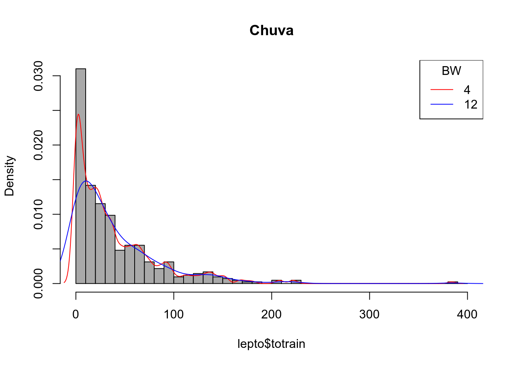
hist(lepto$cases, breaks=seq(0,36,by=1),freq=F, col="darkgray", main = "Casos Leptospirose")
lines(density(lepto$cases , 1),col=2)
lines(density(lepto$cases , 2),col="green")
lines(density(lepto$cases , 4),col="blue")
legend("topright", c("1","2","4"), title="BW", col=c(2,"green","blue"), lty=c(1,1,1))
hist(lepto$cases, breaks=seq(0,36,by=1),freq=F, col="darkgray")
lines(density(lepto$cases , 2, kernel = "rectangular" ),col=2)
lines(density(lepto$cases , 2, kernel = "triangular" ),col="green")
lines(density(lepto$cases , 2, kernel = "gaussian" ),col="blue")
legend("topright", c("rectangular","triangular","gaussian"), title="BW", col=c(2,"green","blue"), lty=c(1,1,1))
- Aplicando o Kernel em ST
plot(totrain ~ week, data=lepto, cex=.3, pch=19,col="gray35",ylab="Kernel Chuva", xlab="Semana",
main="Kernel Smooth")
lines(ksmooth(lepto$week, lepto$totrain, kernel = "normal", bandwidth = 52), col=3)
lines(ksmooth(lepto$week, lepto$totrain, kernel = "normal", bandwidth = 13), col=2)
lines(ksmooth(lepto$week, lepto$totrain, kernel = "normal", bandwidth = 4), col=4)
lines(ksmooth(lepto$week, lepto$totrain, kernel = "normal", bandwidth = 21), lwd=2)
legend("topright",c("52 sem.","13 sem.","4 sem.","21 sem."),fill=c(3,2,4,1), title="Janela",bty="n")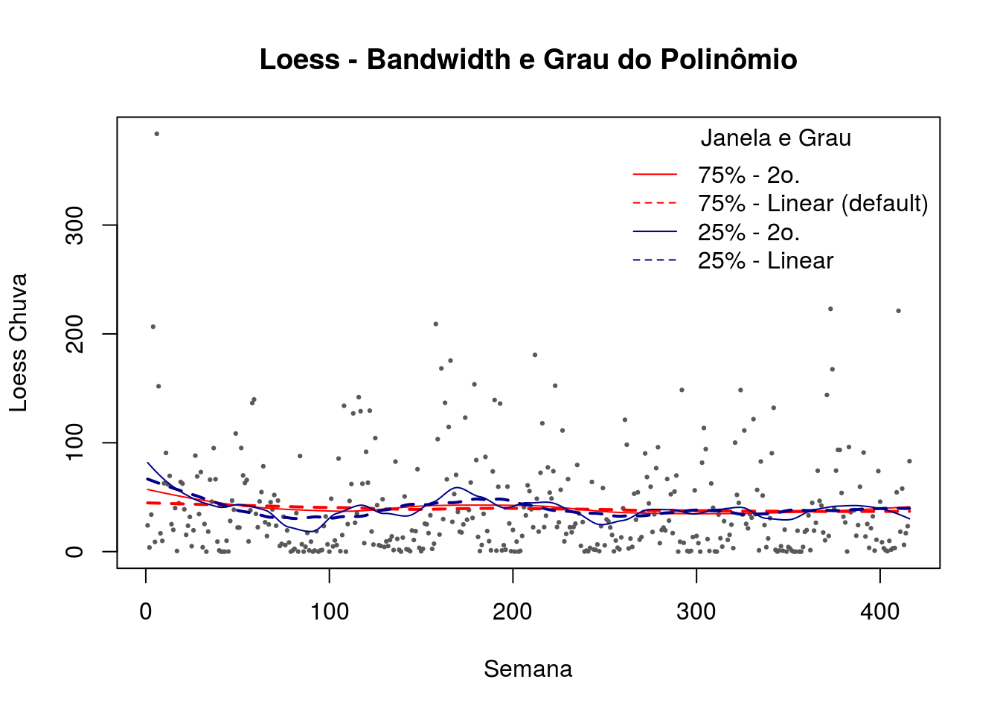
1.3.2 Largura de Banda
Como estimar a largura de banda ?
- Validação cruzada
\[CV(\lambda) = \frac{1}{n} \sum_{j=1}^n \left( y_i - \hat{f}_{\lambda(j)} (x_j) \right) ^2\]
O ponto deixado fora do ajuste a cada vez,
\(\lambda\) o valor que minimiza essa equação.
### efeito de borda
# exluindo os pontos 1 a 3 para forcar borda
lepto2 <- lepto[-c(1,2,3),]
hcv(lepto2$week, lepto2$totrain, display="lines")[1] 6.129
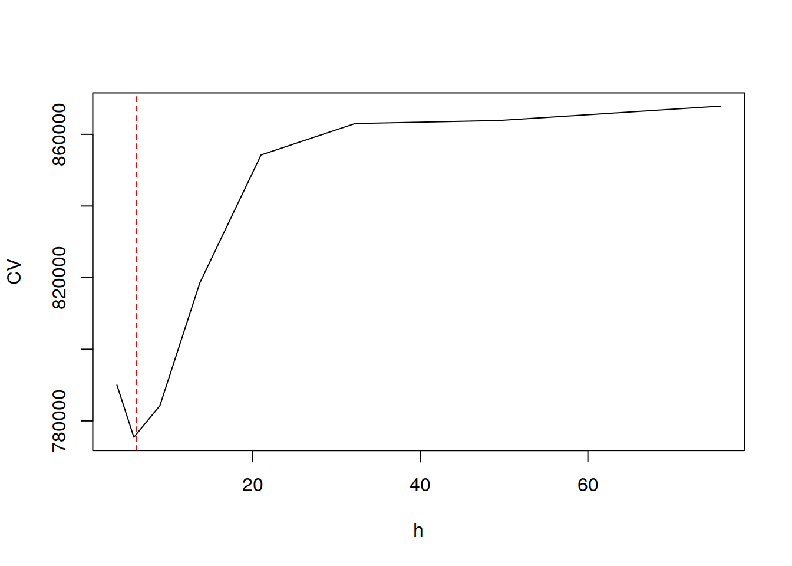
plot(totrain ~ week, data=lepto2, cex=.3, pch=19,col="gray35",ylab="Kernel Chuva", xlab="Semana",
main="Kernel Smooth -- Efeito de Borda")
lines(ksmooth(lepto$week, lepto$totrain, kernel = "normal", bandwidth = 21 ), col=2)
lines(ksmooth(lepto2$week, lepto2$totrain, kernel = "normal", bandwidth = 6.1 ), col=1)
legend("topright",c("21 sem.","6 sem."),fill=c(2,1), title="Janela",bty="n")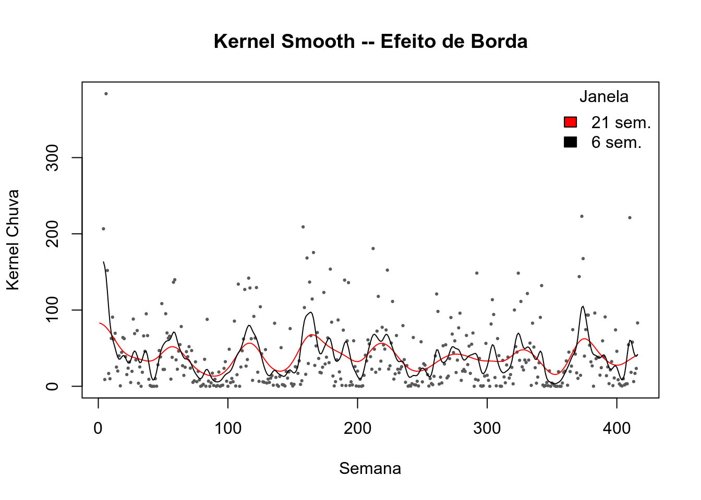
1.3.3 Utilização do Kernel
Vantagens: simples, ótimo para análise exploratória.
Desvantagens: efeito de borda.
Muito sensı́vel à largura de banda.
Escolha automática de largura de banda pode não ser o desejável.
Pouco sensı́vel à forma da função, desde que suave.
1.4 Lowess (Locally Weighted Sum of Square)
Semelhante ao kernel, mas os valores são estimados a partir de uma regressão local ao invés da média ponderada.
A cada ponto do conjunto de dados um polinômio é ajustado utilizando um sub-conjunto através de mı́nimos quadrados ponderados de forma a dar maior peso aos pontos próximos.
O subconjunto dos dados é também denominado janela ou largura de banda ou parâmetro de suavização e controla flexibilidade da função de regressão – se a janela for igual ao total de pontos fica igual à regressão.
Quanto maior o tamanho da janela, maior o alisamento e vice-versa.
O grau do polinômio de cada regressão local em geral é baixo. Polinômio de primeiro grau é a regressão linear local; de segundo regressão quadrática.
A largura da janela é indicado por uma fração dos dados que varia de 0 a 1.
Exemplo: largura 0,1 significa que a janela tem largura que equivale a 10% do eixo horizontal;
Polinômio de grau 0 é a média móvel;
Se a janela for de 100% dos pontos = média.
Existem varias funções que implementam o Lowess no R temos dois grupos que implementa uma função de suavização como por exemplo a lowess() ou como modelo loess() .
plot(lepto$week, lepto$totrain,cex=.3, pch=19, col="gray35",ylab="Loess Chuva", xlab="Semana", main="Loess - Bandwidth e Grau do Polinômio")
lines(lowess(lepto$totrain ~ lepto$week ,f = 0.75),col=4)
lines(lowess(lepto$totrain ~ lepto$week ,f = 0.015),col=2)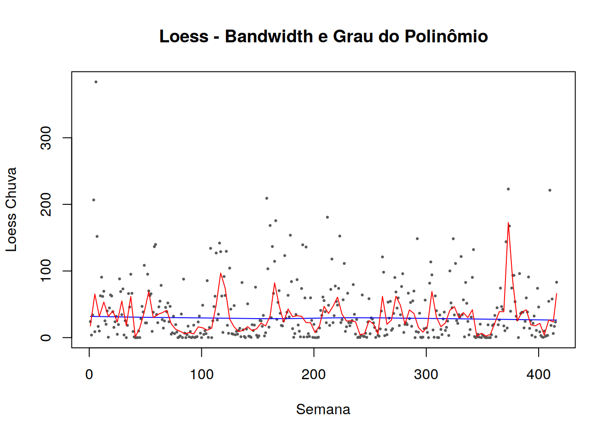
# Loess – Span & Grau
plot(lepto$week, lepto$totrain,cex=.3, pch=19, col="gray35",ylab="Loess Chuva", xlab="Semana", main="Loess - Bandwidth e Grau do Polinômio")
lines(predict(loess(totrain ~ week , data=lepto,span = 0.75, degree = 2)),col=2)
lines(predict(loess(totrain ~ week , data=lepto,span = 0.75, degree = 1)),col=2,lwd=2,lty=2)
lines(predict(loess(totrain ~ week , data=lepto,span = 0.05, degree = 2)),col="darkblue")
lines(predict(loess(totrain ~ week , data=lepto,span = 0.05, degree = 1)),col="darkblue",lwd=2,lty=2)
legend("topright",c("75% - 2o.","75% - Linear (default)","5% - 2o.","5% - Linear"),lty=c(1,2,1,2), col=c(2,2,"darkblue","darkblue"), title="Janela e Grau",bty="n")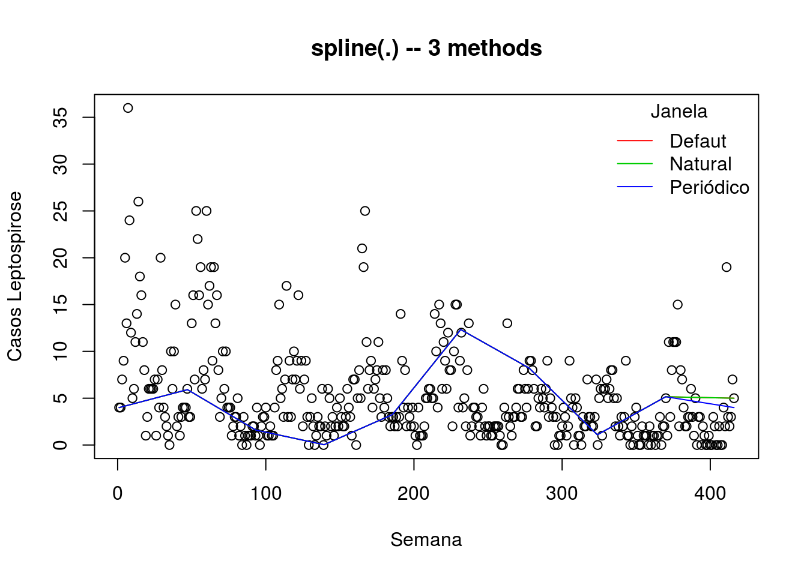
# Loess – Span
# lowess - f
plot(lepto$week, lepto$totrain,cex=.3, pch=19, col="gray35",ylab="Loess Chuva", xlab="Semana", main="Loess - Bandwidth")
lines(predict(loess(totrain ~ week , data=lepto,span = 0.15, degree = 2)),col=1, lwd=1.5)
lines(predict(loess(totrain ~ week , data=lepto,span = 0.05, degree = 2)),col=2, lwd=1.5)
lines(predict(loess(totrain ~ week , data=lepto,span = 0.10, degree = 2)),col="darkblue", lwd=1.5)
legend("topright",c(" 5% (21 sem.)","10% (41 sem.)","15% (61 sem.)"),col=c(2,"darkblue",1), lty=c(1,1,1),title="Janela",bty="n")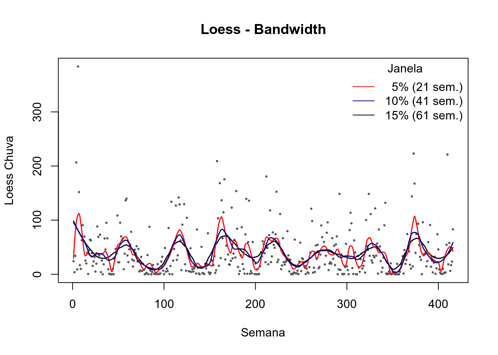
# Loess – Span & Borda
plot(lepto$week, lepto$totrain,cex=.3, pch=19, col="gray35",ylab="Loess Chuva", xlab="Semana", main="Loess - Bandwidth")
lines(predict(loess(totrain ~ week , data=lepto2,span = 0.15, degree = 2)),col=1, lwd=1.5)
lines(predict(loess(totrain ~ week , data=lepto2,span = 0.05, degree = 2)),col=2, lwd=1.5)
lines(predict(loess(totrain ~ week , data=lepto2,span = 0.10, degree = 2)),col="darkblue", lwd=1.5)
legend("topright",c(" 5% (21 sem.)","10% (41 sem.)","15% (61 sem.)"),col=c(2,"darkblue",1), lty=c(1,1,1),title="Janela",bty="n")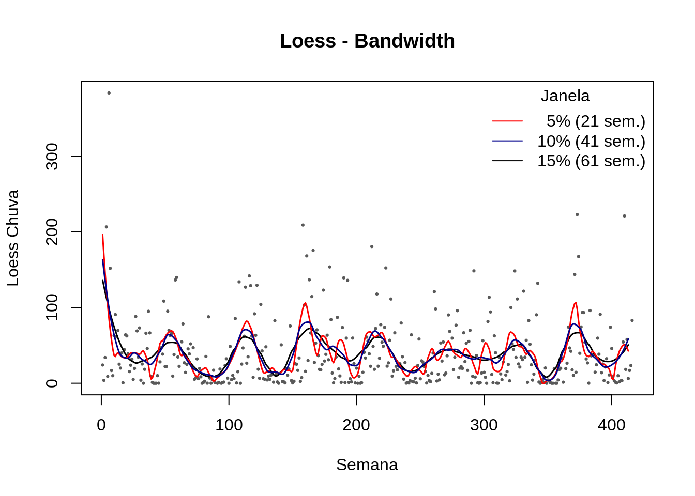
# Loess – Outra forma, mas fica pouco suave
scatter.smooth(lepto$week, lepto$tempmed, span = .05, degree = 2, family = "gaussian",
col= "darkgray", cex=.5, ylab="Temperatura", xlab="Semana")
scatter.smooth(lepto$week, lepto$totrain, span = .05, degree = 2, family = "gaussian",
col= "darkgray", cex=.5, ylab="Chuva", xlab="Semana")
scatter.smooth(lepto$week, lepto$cases, span = .05, degree = 2, family = "gaussian",
col= "darkgray", cex=.5, ylab="Casos Leptospirose", xlab="Semana")
1.4.1 Utilização do Lowess
Vantagens: simples ótimo para análise exploratória.
Desvantagens: sensı́vel a valores extremos.
Menos sensı́vel à borda.
1.4.2 Comparando

Kernel average smoother

Local linear regression
1.5 Splines
Splines são funções polinomiais que juntam nos nós, de forma suave, o que é garantido pela existência de \(1^a\) e \(2^a\) derivadas.
A escolha do parâmetro de suavização pode ser visual ou mais formal, quando a definição é dada pelo valor que minimiza o erro quadrático médio do ajuste, ou através de alguma forma de validação cruzada.
A função que minimiza regressão penalizada é uma spline cúbica natural com nós em valores distintos de \(x_i\).
Um problema de regressão penalizada: como encontrar a solução \(\hat{f}(x)\) que minimize:
\[\sum\left[y_i - f(x_i) \right]^2 + \tau \int f''(x)]^2 dx\] sendo \(\tau\) o parâmetro de alizamento:
Se \(\tau = 0 \Rightarrow \hat{f}(x)\) é interpolação simples
Se \(\tau\) é muito grande \(\Rightarrow \hat{f}(x)\) será tal que \(f''(x)\) seja zero em todos os pontos, ou seja, mínimos quadrados.
1.5.1 Splines vs Loess
Como no spline se minimiza uma função-objetivo explı́cita, é mais elegante matematicamente.
O ajuste dos dois é muito semelhante para o mesmo número de graus de liberdade.
Pode-se ajustar essas funções para diversos preditores:
\[ \eta = \beta_0 + f_1(x_{i1},x_{i2},\ldots,x_{ip}) + \ldots\] mais complexo para splines (thin plate splines)
plot(lepto$week, lepto$cases, ylab="Casos Leptospirose", xlab="Semana", main = "spline(.) -- 3 methods")
lines(spline(lepto$week, lepto$cases, n=10 ), col = 2)
lines(spline(lepto$week, lepto$cases, n=10, method = "natural"), col = 3)
lines(spline(lepto$week, lepto$cases, n=10, method = "periodic"), col = 4)
legend("topright",c("Defaut","Natural","Periódico"),col=c(2,3,4), lty=c(1,1,1),title="Janela",bty="n")
lepto.spl <- smooth.spline(lepto$week, lepto$cases)
lepto.spl.cv <- smooth.spline(lepto$week, lepto$cases, cv =T)
plot(lepto$week, lepto$cases, cex=.6, col="darkgray", ylab="Casos Leptospirose", xlab="Semana")
lines(lepto.spl, col=1)
lines(lepto.spl.cv, col=5)
lines(smooth.spline(lepto$week, lepto$cases, df=10),col=3)
lines(smooth.spline(lepto$week, lepto$cases, df=50),col=4)
lines(smooth.spline(lepto$week, lepto$cases, df=2),col=2)
legend("topright",c("Sem CV","Com CV","df=10", "df=50", "df=2"),col=c(1,5,3,4,2), lty=c(1,1,1),title="Janela",bty="n")
1.6 Exercícios Propostos
Seja \(Z_t\) (temperaturaNY.csv) uma série temporal referente às médias anuais das temperaturas na cidade de Nova York durante os anos de 1912 e 1971. Utilize e discuta alguns métodos de transformação e/ou suavização para descrever a série.
Faça o mesmo com a série de dengue no Vietnã (denguecases2.csv)
Verifique as series com atenção e veja como será a melhor maneira de ler e transformar o dato em ST lembre-se que no windows você vai precisar
1.7 Bibliografia sugerida
Faraway, J.J. Extending the Linear Model with R. Chapman & Hall/CRC Texts in Statistical Science Series, 2006.
Hastie, T.; Tibshirani, R. Generalised Additive Models. Chapman & Hall, 1990.
Wood, S.N. Generalized Additive Models: An Introduction with R. Chapman & Hall/CRC Texts in Statistical Science Series, 2006.
Venables, W.N. & Ripley, B.D. Modern Applied Statistics with S. (MASS) Fourth Edition 2002